How to use
drmed.ph at work.
A plain-English walk-through of every day-to-day feature in the staff portal — written for the people who actually use it. No technical background required.
Welcome
drmed.ph is the system that runs the clinic from the moment a patient walks in to the moment they pick up their results. Reception books and bills the visit, the lab team enters the results, admin keeps the catalog and payroll tidy, and patients see their own results in a secure online portal. Everything connects.
What's in this guide
Three chapters of step-by-step instructions — one for each role you'll most likely be playing during a shift. You don't have to read it all. Skim the contents on the left, jump to what you need.
When you see a grey pill like /staff/patients, that's a web address inside the app — type it after drmed.ph in your browser, or click the matching item in the sidebar. Coloured boxes (like the one you're reading) flag tips, warnings, and gotchas.
Getting started
2.1 Logging in
- Go to drmed.ph/staff/login.
- Type your work email and password.
- Click Sign in. You'll land on your dashboard.
Ask Admin to reset your password — there is no self-service "Forgot password" link for staff. This is intentional, for security.
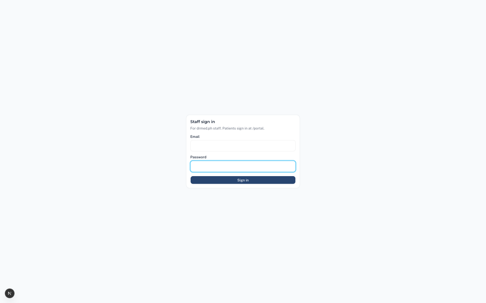
2.2 Two-step sign-in (MFA)
MFA (multi-factor authentication) adds a 6-digit code from your phone on top of your password — required for Admins, optional for everyone else but strongly recommended.
- After signing in, go to /staff/mfa.
- Open an authenticator app on your phone (Google Authenticator, Microsoft Authenticator, 1Password, etc.).
- Scan the QR code shown on screen.
- Type the 6-digit code your app generates, click Verify.
Tell Admin immediately. They can remove your MFA factor so you can sign in again and set it up on the new device. There is no recovery code emailed to you — Admin is the recovery path.
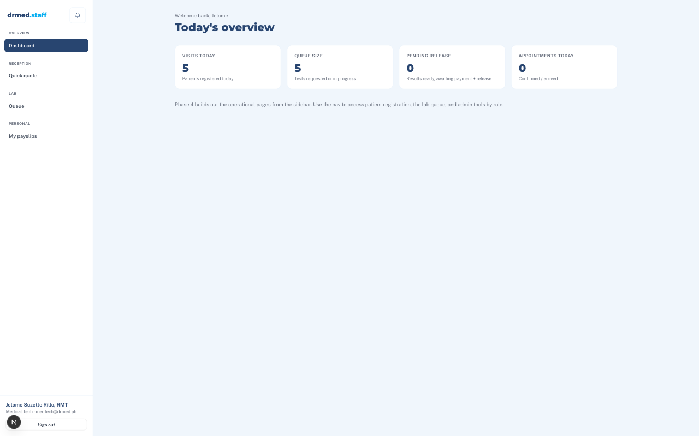
2.4 On a phone
Every screen works on a phone. The sidebar tucks into a hamburger menu (☰ top-left) — tap it to open. Long tables scroll sideways. Buttons are large enough to tap with a thumb.
For Reception
Reception is the front door. Almost every patient touches a Reception screen at least twice: once on arrival (to create the visit and pay), and once on pickup (to collect their result). The most important screen is New visit — this section walks through it carefully.
3.1 Appointments /staff/appointments
Every booking made through the public /schedule page lands here — lab appointments, doctor consultations, package bookings, home services. Use this screen to:
- See today's bookings at a glance, with patient name, time, and what they're coming for.
- Confirm, reschedule, or cancel bookings.
- Filter by physician when you need to know one doctor's schedule.
- Mark a booking as walked-in so it links to the visit you'll create next.
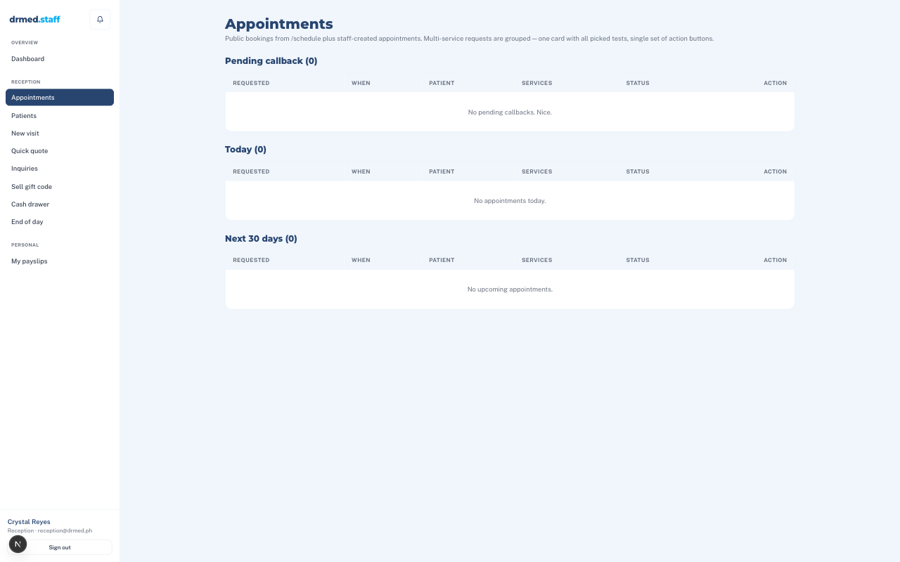
3.2 Patients /staff/patients
Every person ever served has a row in this list. Search by name, phone number, or DRM-ID.
Find an existing patient
Type into the search bar. Matches show as you type. Open a row to see the full profile.
Create a new patient
Click New patient. Fill in name, birthday, gender, contact details, address. Senior / PWD ID goes here if applicable.
/staff/patients/newEdit a patient
Open the patient, click Edit. Changes are saved instantly and audit-logged.
The DRM-ID
Every patient is assigned a permanent ID (e.g. DRM-002841). They'll use it together with their receipt PIN to view results online.
If a patient booked through the public website, they may already exist in the system before they walk in. Search before creating — you don't want two rows for the same person.
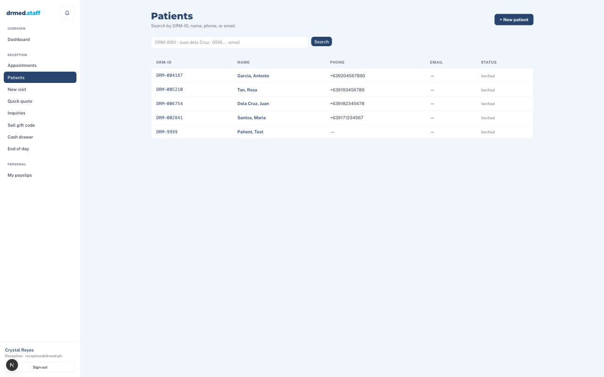
3.3 Creating a new visit /staff/visits/new
This is the central Reception flow. A "visit" is one trip to the clinic — it bundles together every test, consultation, procedure, or home service the patient is paying for today.
- Pick the patient. Search by name or DRM-ID. If they're new, click "Create patient" right from this screen.
- Add services. Search for each test or service (e.g. "CBC", "Lipid Panel", "Doctor Consult"). Each one you add becomes a line on the visit with its price already filled in.
- Mark HMO if applicable. If the patient is using HMO coverage, switch on the HMO block and pick the provider (Maxicare, Valucare, etc.). Enter the approval reference number. The price will automatically use the HMO rate for that service.
- Apply discounts. Senior / PWD discounts attach per line. Toggle them where they apply.
- Record payment. Pick the method (Cash, GCash, BPI, BDO, Card, Bank transfer). If it's an HMO visit, the "payment" is actually a claim — record it as HMO, not cash.
- Confirm. Click Create visit. The system generates a Control Number, prints the PIN once on a confirmation screen, and saves everything.
When you add a Doctor consult, type in the base price — the system splits it automatically into the clinic's cut and the doctor's professional fee (PF). For Doctor procedures billed to HMO, type the procedure description and the HMO-approved amount.
A patient's results cannot be released if the visit isn't fully paid. The system blocks it at the database level — even if a button looks clickable, it will fail. Mark payment as soon as it's received.
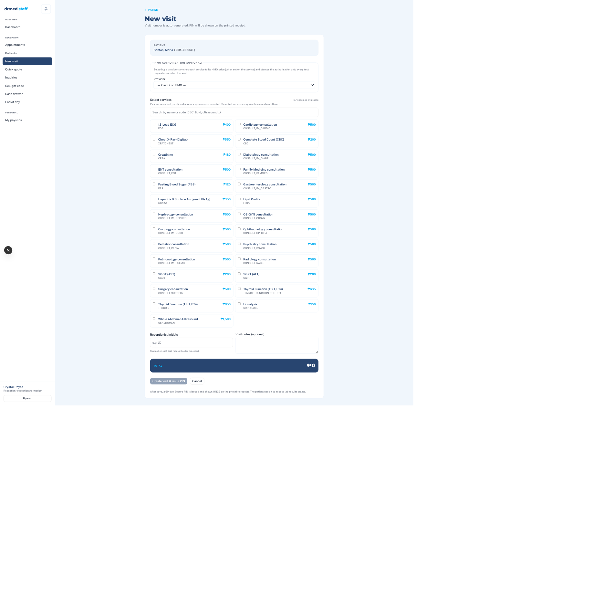
3.4 The patient PIN & receipt /staff/visits/[id]/receipt
Right after creating a visit, the system prints a receipt that includes the patient's 8-character PIN. This PIN plus their DRM-ID is how they'll access their results online.
Hand the printed receipt to the patient. The PIN is never shown again anywhere in the system — not even to you. If they lose it, they have to come back to the clinic for a new one.
The receipt also shows the visit's Control Number, what they paid for, the amount, and the expected release date(s).
3.5 Recording payments after the fact /staff/payments/new
Sometimes a patient pays in instalments, or the visit was created before payment was complete. Use the Payments screen to add a payment to an existing visit:
- Search for the visit by Control Number or patient name.
- Choose the payment method and enter the amount.
- Add a reference number if it's a card or e-wallet payment.
- Save. The visit's payment status updates automatically.
To void a payment (entered by mistake, customer refunded), open the payment from the visit page and click Void. You'll be asked for a reason. The void is recorded and the visit's payment status recalculates.
3.6 Releasing results to patients
Once the lab has finalised a result, the visit page shows a Release button next to that test. Click it to mark the result as released, then choose how the patient is receiving it: Physical copy, Email, Viber, GCash chat, or Pickup.
Each patient has a "preferred release medium" on their profile. If you've set it (e.g. "Email"), the Release dialog defaults to that choice so you don't have to re-ask.
3.7 Quick quote /staff/quote
A walk-in is asking "how much for a CBC and Urinalysis?" — use Quote. Add services, see the total. Nothing is saved; nothing is billed. Pure price check.
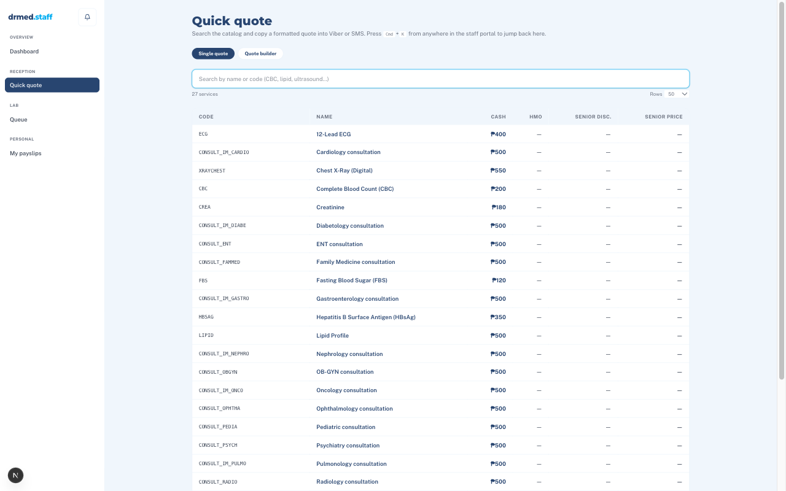
3.8 Phone inquiries /staff/inquiries
For people who call to ask about services without coming in. Log them as inquiries so marketing has a record of demand and you can follow up later.
- New inquiry — capture caller name, contact, what they're asking about.
- Status pipeline — track from "new" through "contacted" to "booked" or "lost."
- Convert to booking — if they decide to come in, turn the inquiry directly into an appointment.
3.9 Selling a gift code /staff/gift-codes/sell
Gift codes are pre-generated by Admin (₱500 is typical, format GC-XXXX-XXXX-XXXX). To sell one:
- Open Sell gift code.
- Pick an available code from the list.
- Record the buyer's name and payment.
- Hand the code to the buyer. They (or a recipient) can redeem it later as payment for a visit.
3.10 Cash drawer /staff/payments/cash-drawer
At the start of your shift, open the cash drawer and record the opening cash float (the cash you found in the drawer when you started). The system uses this as the baseline for the end-of-day reconciliation.
3.11 End of day /staff/payments/eod
At shift close, the End of Day screen totals every cash, card, and e-wallet payment recorded today. You count the physical cash and type in what you actually have. The system tells you whether you balance, are short, or over.
If counted cash doesn't match the system's expected total, add a note explaining why (e.g. "₱20 paid out for office supplies, no receipt yet"). Admin will see this in the daily revenue report.
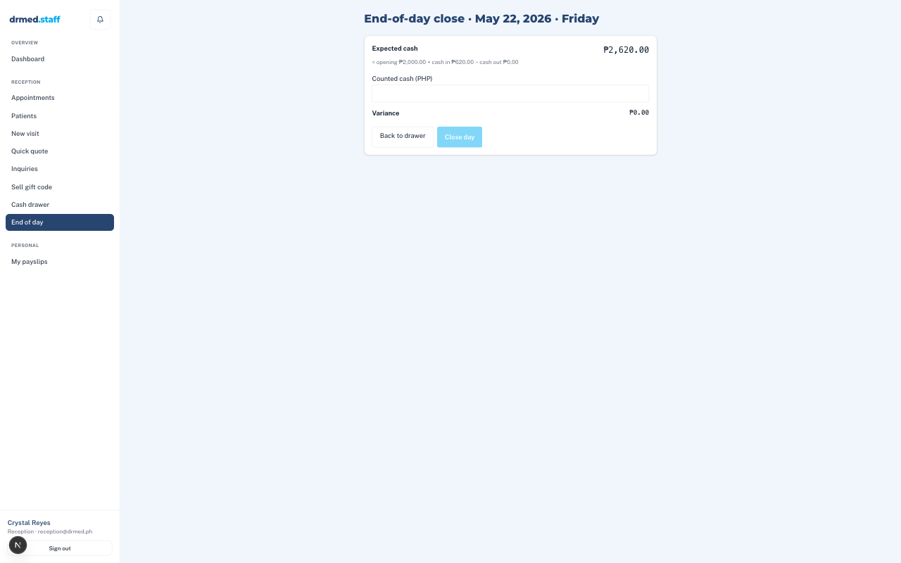
For the Lab team
The Lab team owns the queue — the list of tests waiting to be done. Medtechs see lab-bench tests (chemistry, hematology, immunology, urinalysis, microbiology, send-outs). X-ray technicians see imaging (X-ray + ultrasound). Pathologists and Admins see everything.
4.1 Your queue /staff/queue
The queue shows every test that needs your attention, sorted with the oldest first. Each row tells you the patient (anonymised initials + DRM-ID), the test, the visit's Control Number, and the current status:
| requested | Reception has charged for it; ready for you to pick up |
| in_progress | Someone (probably you) is working on it |
| result_uploaded | Result entered, waiting for pathologist sign-off (if required) |
| ready_for_release | Done — reception will release it to the patient |
| released | Patient has access via the portal |
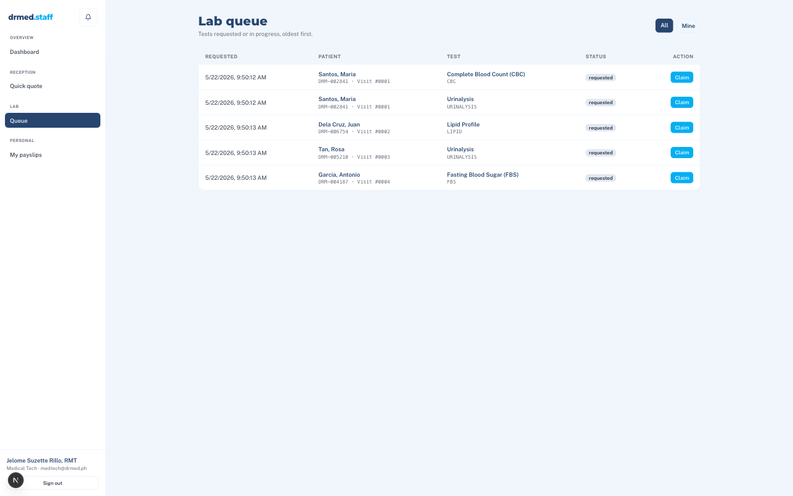
4.2 Picking up a test
Click any row in requested status to open it. The page shows the patient's history (so you can compare to last time), the test's reference ranges, and a "Start" button. Clicking Start moves the test to in_progress — a signal to teammates that you've got it.
4.3 Entering results
Most tests use a structured form: one field per parameter (e.g. WBC, Hgb, Hct), with units and reference ranges shown alongside. Type values, and the system flags anything outside the normal range automatically (H = high, L = low, etc.).
The form is age- and sex-aware — a 35-year-old woman gets different reference ranges than a 60-year-old man. You don't have to remember; the system picks the right range from the patient's profile.
You can leave a test mid-entry and come back to it — values are saved as you type. Just don't click "Finalise" until you're actually done.
For tests that don't have a structured template (imaging, narrative reports), upload a finished PDF instead — the upload field is on the same screen.
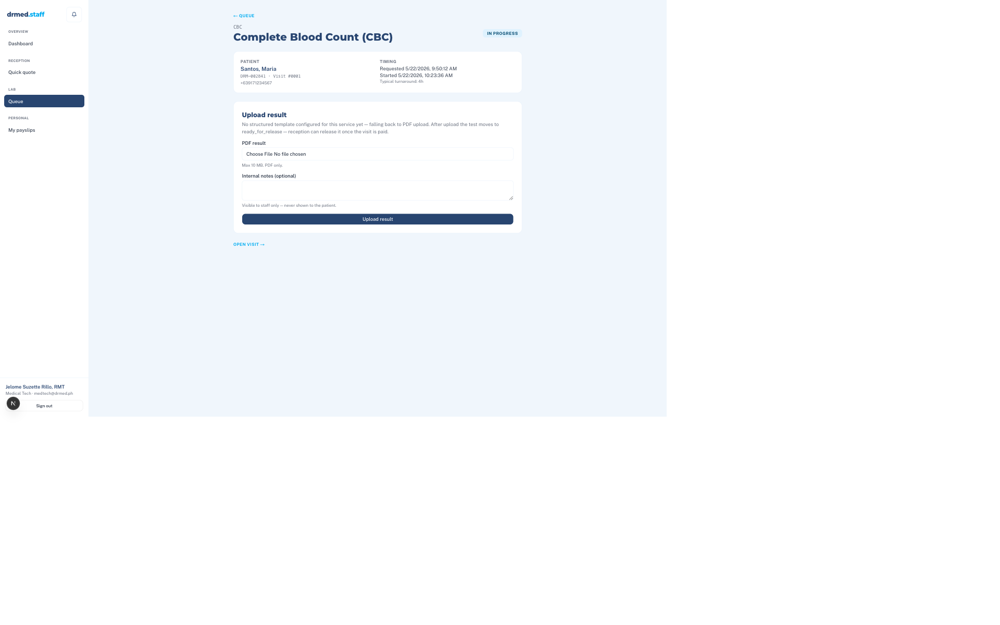
4.4 Finalising & releasing
- When all values are in, click Finalise. The status changes to result_uploaded.
- If the service requires pathologist sign-off, it now waits in the pathologist's queue. They review and sign — status moves to ready_for_release.
- If no sign-off is required, finalising goes straight to ready_for_release.
- Reception sees the test as ready and clicks Release when the patient picks up (or when they email it).
4.5 Amending a released result
Mistakes happen. To correct a result that's already been released:
- Open the test from the queue or the visit page.
- Click Amend. Enter the correction and a reason.
- A new version of the PDF is generated; the old one is kept for the audit trail.
If the patient already downloaded the old PDF, they won't be told automatically — call or message them so they know to view the updated version.
4.6 Critical alerts
Some values are dangerously abnormal (e.g. blood sugar over 400, critically low platelets). When you enter a value that crosses a critical threshold, the system pops a Critical alert banner and notifies the pathologist and reception in real time. Don't dismiss it — confirm a callback is happening.
4.7 Send-outs (Hi Precision)
Some tests we don't run in-house — they ship to Hi Precision Diagnostics. These show in your queue with a send-out flag. When the report comes back from Hi Precision, upload the PDF on the test's page and finalise. There's a "pending send-outs" view so nothing falls through the cracks.
4.8 Imaging — X-ray & ultrasound
X-ray techs see X-ray and ultrasound studies in the queue. The flow is the same as a lab test, with two differences:
- You typically upload the radiologist's PDF report rather than entering values.
- You can attach the imaging files (DICOM, JPEG) so they live with the report.
For Admin
Admin keeps the system tuned: prices stay accurate, templates match what the lab uses, the right people have the right access, and payroll runs on time. Admin can do everything Reception and the Lab team can do, plus everything in this chapter.
5.1 Services & prices
Services
The full catalog — every test, consult, procedure, package, vaccine, home service. Add, edit, retire.
/staff/servicesPrices
A focused view for updating cash, HMO, and senior/PWD prices in bulk. Hi Precision send-out flag also lives here.
/staff/admin/pricesHMO prices aren't a fixed percentage of cash prices — they're set per provider and can change. Always set them explicitly; don't assume a multiplier.
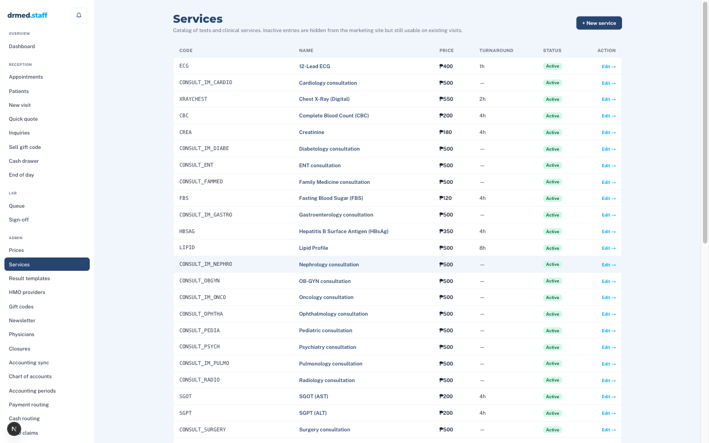
5.2 Result templates /staff/admin/result-templates
A "template" is the structured form a medtech fills in for a given test (CBC, Lipid Panel, etc.). It defines:
- The list of parameters (Hgb, Hct, WBC, etc.) and their units.
- Reference ranges — including age-banded and sex-specific ranges.
- Which parameters are critical (trigger an alert if outside threshold).
- Which medtech's PRC license number prints at the bottom.
Use Preview to see the PDF a patient would receive without affecting any live data.
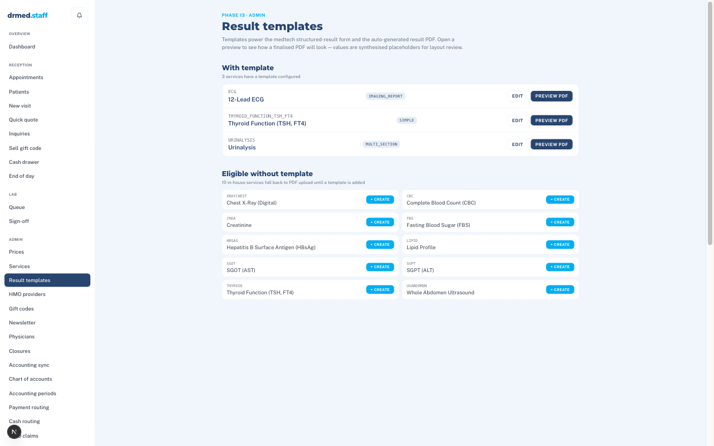
5.3 Physicians & schedules /staff/admin/physicians
One row per doctor who consults at the clinic. For each, you maintain:
- Profile — name, PRC number, specialty, contact.
- Schedule — which days and times they're available, slot length, room.
- Clinic fee / PF split defaults — what Reception will use when entering a consult.
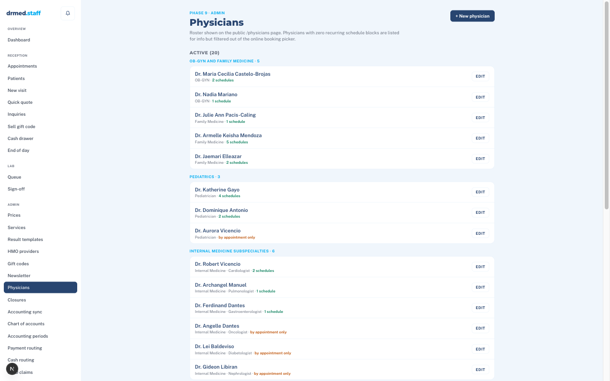
5.4 HMO providers /staff/admin/hmo-providers
The list of HMO networks you accept (Maxicare, Valucare, Cocolife, Med Asia, Intellicare, Avega, Generali, Etiqa, Amaphil, iCare, Pacific Cross, etc.). Add new ones as contracts are signed; edit their contract details, contact persons, and billing days.
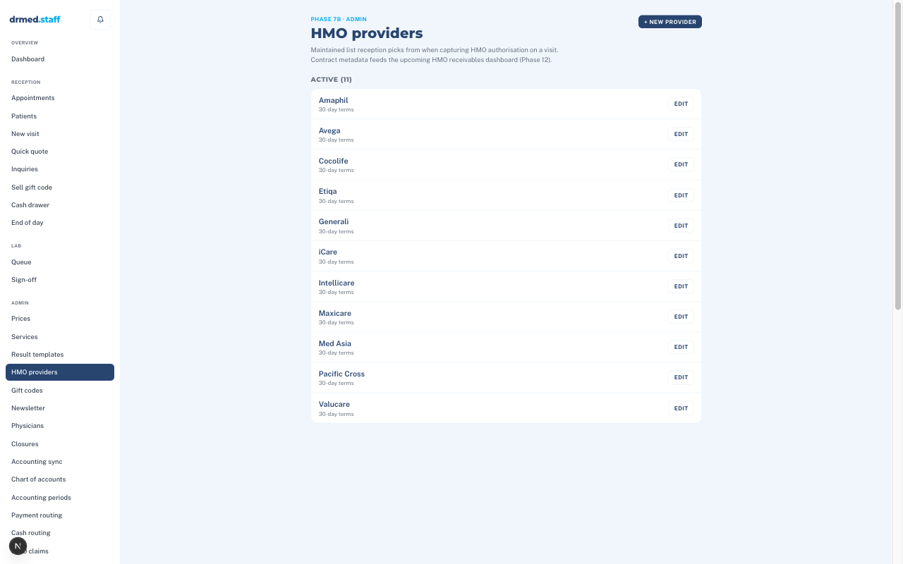
5.5 Gift codes /staff/admin/gift-codes
Generate batches of pre-paid gift codes for Reception to sell.
- Generate — create a batch (e.g. 50 × ₱500 codes).
- Sales — track which were sold, to whom, on what date.
- Detail — see redemption status of any code.
5.6 Clinic closures /staff/admin/closures
When the clinic is closed for a holiday, training day, or emergency, add a closure here. The public booking page automatically hides those dates so patients can't book into a closed day.
5.8 Payroll
A self-contained payroll module that handles five (or however many) employees on a semi-monthly cycle, fully aligned to Philippine labour rules.
Employees
Profiles, hire date, basic monthly pay, fixed allowances (transpo, meal, comm), bank details.
/staff/admin/payroll/employeesPay periods
The cut-off dates for each half of the month. Lock a period once payroll is finalised.
/staff/admin/payroll/periodsPay runs
Compute payroll for a period — basic + allowances + on-call + holiday/OT − deductions − loans. Preview, adjust, finalise, pay out.
/staff/admin/payroll/runsOT slips
Approve overtime requests before they flow into the next pay run.
/staff/admin/payroll/ot-slipsHolidays
Regular and special non-working holidays. The compute engine uses these to apply correct multipliers.
/staff/admin/payroll/holidaysLeaves
SL / VL / EL approval and balance tracking per employee.
/staff/admin/payroll/leavesStatutory rates
SSS, PHIC, HDMF, and BIR withholding tables. Update when government rates change.
/staff/admin/payroll/ratesSettings
Default cut-off days, payout method, payslip template, employer info.
/staff/admin/payroll/settingsThe pay-run cycle
- Create a pay run for the period.
- Upload the DTR (daily-time-record) CSV exported from the ZKTeco biometric.
- The system computes gross, deductions, and net pay for each employee.
- Review. Adjust any line if needed (with a reason).
- Finalise — locks the run.
- Mark each employee's payout (cash handed over, or bank transfer reference) — payslip PDF is generated and can be emailed and/or printed.
Every staff user has a /staff/payslips page where they can view and download their own payslips at any time. They never see anyone else's.
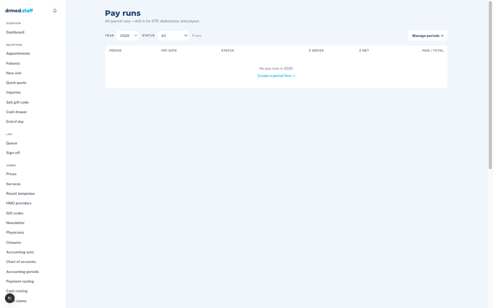
5.9 Reports
Daily revenue
Day-by-day breakdown of revenue by service section and payment method. Useful for spotting unusual swings.
/staff/admin/reports/daily-revenueStaff advances
Tracks cash advances given to employees that need to be deducted from a future payroll.
/staff/admin/reports/staff-advances5.10 Staff users & roles /staff/users
Add a new staff member, set their role (Reception, Medtech, X-ray tech, Pathologist, Admin), and link their PRC license number if applicable. Deactivate when they leave — don't delete; deactivation keeps the audit trail intact.
| Role | What they can do |
|---|---|
| Reception | Patient and visit management, payments, gift sales, cash drawer + EOD |
| Medtech | Lab-bench queue + result entry |
| X-ray technician | Imaging queue + result entry |
| Pathologist | All queues + sign-off authority |
| Admin | Everything (catalog, payroll, users, reports, audit) |
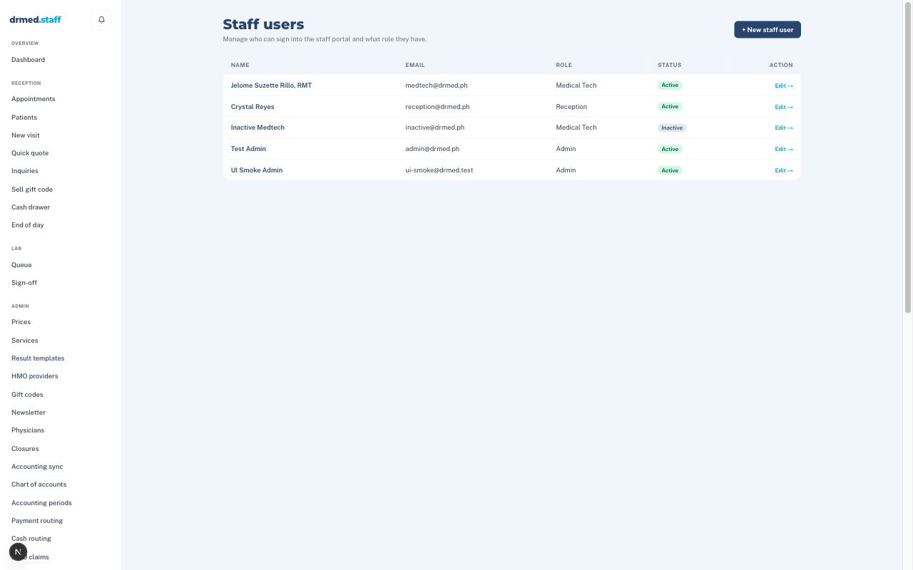
5.11 Audit log /staff/audit
Every meaningful action in the system is recorded: who did what, when, from which device. Includes logins, MFA challenges, patient edits, payments, result releases, PIN attempts (success and failure), and every change Admin makes.
Required by the Philippine Data Privacy Act (RA 10173). If a regulator asks "who accessed this patient's record?" — this is the answer. Filter by patient, by staff user, by date, by action.
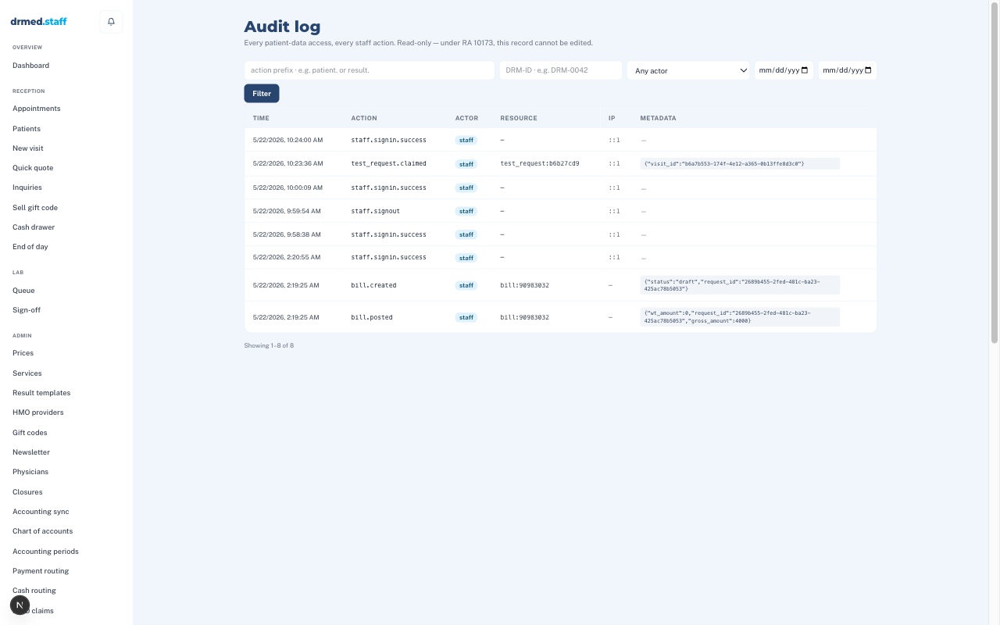
5.12 Patient tools
Import patients
One-time bulk import from a CSV — used when migrating from a legacy system or spreadsheet. Validates each row before saving.
/staff/admin/import-patientsMerge patients
When the same person was accidentally created twice, merge the duplicates into one record. All visits and history move to the surviving record.
/staff/admin/patient-mergeCommon questions
"I can't find a patient."
Try searching by phone number or DRM-ID instead of name — names get misspelled. If still nothing, they probably aren't in the system yet; create them.
"The 'Release' button is greyed out."
The visit isn't fully paid, or the test isn't yet at ready_for_release status. Check the visit's payment status and the test's queue status.
"The patient lost their PIN."
There is no way to recover or resend a PIN — by design, for security. Create a new visit-level PIN at Reception or instruct the patient to come back in person to get one.
"I voided a payment by mistake."
Voiding is reversible only by adding a new payment to replace it. Don't try to "un-void" — just record a fresh payment with a note explaining the situation. The audit log preserves the whole story.
"My phone shows no sidebar."
Tap the hamburger icon (☰) at the top-left. The sidebar slides out from the left.
"The system says my session expired."
Click sign-in again. Sessions time out for security after a period of inactivity. Your work was auto-saved if you were entering results.
Glossary
| Visit | One trip to the clinic, bundling all tests / consults / procedures the patient is doing today. Identified by a Control Number. |
| Control Number | The per-visit running number, printed on the receipt. The patient quotes this when calling about their results. |
| Test Number | A global counter for individual tests, used internally to track each test request. |
| DRM-ID | The patient's permanent ID across all visits (e.g. DRM-002841). |
| PIN | An 8-character code printed on the receipt — used together with the DRM-ID for the patient to view their results online. Shown once, never again. |
| HMO | Health Maintenance Organization — the insurance network paying the bill (Maxicare, Valucare, etc.). |
| PF | Professional fee — the doctor's portion of a consult or procedure charge. |
| Send-out | A test we don't run in-house and ship to a partner lab (typically Hi Precision Diagnostics). |
| Queue | The list of tests waiting to be worked on by the lab team. |
| Sign-off | A pathologist's review and approval of a result, required for certain tests before they can be released. |
| DTR | Daily Time Record — the attendance file from the biometric machine, fed into payroll. |
| EOD | End of Day — the reconciliation Reception does at shift close to balance cash on hand. |
| Audit log | The system's tamper-evident history of every meaningful action, required by RA 10173. |